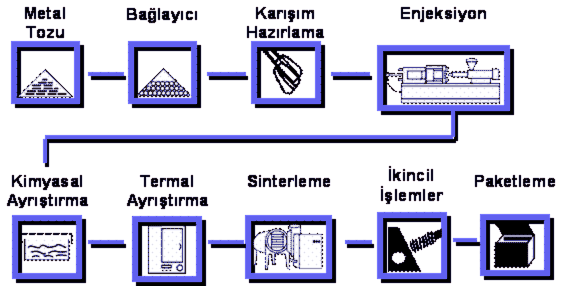
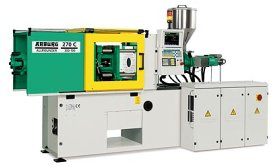
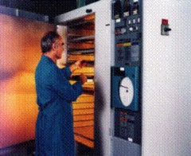
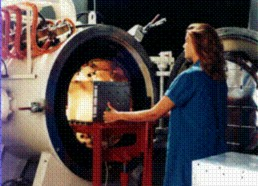

|
Giriþ:
Metal
Enjeksiyon Kalýplama (MIM-Metal Injection Moulding) teknolojisi
ile mühendisler tasarým ve üretimde sýnýrlarý zorluyor: El
Aletleri, Týp, Optik, Ateþli Silahlar, Elektronik ve Otomotiv
endüstrilerinin "Hassas ve Karmaþýk Þekilli" parçalarý seri
biçimde üretilebiliyor. Paslanmaz çelikler; yüksek mukavemetli
çelikler; genel imalat çelikleri; invar, kovar gibi özel alaþýmlar;
bakýr, pirinç, titanyum gibi demir dýþý metaller ve daha bir
çok malzeme MIM'e uygulanýyor.
Metal
Enjeksiyon Kalýplama ya da literatürde bilinen adýyla MIM
teknolojisi özellikle son 15-20 yýl içerisinde alternatif
bir imalat metodu olarak kendini göstermeye baþlamýþtýr. Göreceli
olarak küçük, hassas ve kompleks þekilli parçalarýn ekonomik
biçimde üretilmesine imkan tanýyan MIM teknolojisi bugün itibarýyla
dünyada 1 milyar US$ tutarýnda iþ hacmine ulaþmýþtýr. El aletleri,
optik, týp, ateþli silahlar, havacýlýk, elektronik ve otomotiv
gibi günümüzün kitlesel imalat sektörlerine hizmet vererek
sürekli geliþme gösteren MIM endüstrisinin, 2010 yýlý itibarýyla
2 milyar US$'a varan bir pazar büyüklüðüne eriþeceði tahmin
edilmektedir.
MIM
teknolojisi, aslýnda önceden bilinen toz metalürjisi ve plastik
enjeksiyon teknolojilerinin bir arada kombine edilmesi ile
gerçekleþtirilmektedir. Ancak MIM'in bir üretim metodu olarak
uyarlanmasý ve ticari olarak kullanýlmaya baþlanmasý 1990'lara
dayanmaktadýr. Klasik toz metalürjisi, preslenmeye hazýr hale
getirilmiþ toz karýþýmýnýn rijid bir kalýp içerisinde tek
eksende preslenerek sýkýþtýrýlmasý, daha sonra da kalýptan
çýkarýlarak sinterlenmesi esasýna dayanmaktadýr. Böylece nispeten
komplike þekillere sahip parçalar kolayca ve milyonlarca üretilebilmektedir.
Ancak yöntemde parça þekline baðlý olan belirgin bir kýsýtlama
söz konusudur: Parçanýn kalýptan çýkarýlmasý zorunluluðu presleme
yönüne göre açýlý delik ve boþaltmalarýn yapýlmasýný engeller.
Bu sýnýrlama metal enjeksiyon teknolojisinde önemli ölçüde
giderilmiþtir.
|

|
|
Þekil.1
- Metal Enjeksiyon Kalýplama Prosesi
|
Enjeksiyon
yöntemi ile plastik malzemelerin þekillendirilmesi yýllardan
beri uygulanan bir imalat metodudur. Hemen hemen her gün hayatýmýza
karmaþýk þekilli yeni bir plastik parça girmektedir. Çoðu
kez farkýna bile varamadýðýmýz bu parçalarýn en büyük özelliði
göreceli olarak ucuz olmalarýdýr. Ancak diðer taraftan bir
çok mühendislik uygulamasý için de bu termo-plastik malzemeler
yeterli mekanik özelliklere (sertlik, mukavemet, yüksek sýcaklýklarda
çalýþabilme vs.) sahip deðildir. Gerçi bu plastik malzemelere
metal ya da seramik katký maddeleri ilave edilmesi suretiyle
bir çok geliþtirme yapýlmýþtýr. Fakat gerçek ilerleme katkýlý
plastik yerine, yüksek oranda metal tozunun plastik içerisine
karýþtýrýlmasý suretiyle elde edilen "plastik baðlantýlý metal"
malzemenin bulunmasý ile saðlanmýþtýr. Plastik baðlayýcýnýn
dikkatli bir þekilde ayrýþtýrýlarak yapýdan uzaklaþtýrýlmasý
sonucunda geriye sadece metalden oluþan gözenekli bir iskelet
yapý kalýr. Ýþte bu iskelet metal de týpký klasik toz metalürjisinde
olduðu gibi sinterlenerek metalik baðlantýlarýn teþkil edilmesi
ve gözeneklerin kapanmasý suretiyle metal parça haline dönüþtürülür.
Sinter sonrasý parça yoðunluðu, teorik malzeme yoðunluðunun
%95'i civarýndadýr. Yüksek basýnç altýnda sinterleme (HIP)
uygulanmasý ile yoðunluk %99.7 kadar çýkarýlabilmektedir.
Bunun anlamý parçanýn mekanik özelliklerinin geleneksel toz
metalürjisinden öteye geçerek dövme malzeme özelliklerine
sahip olmasýdýr.
Metal
Enjeksiyon Kalýplama prosesisinin temel adýmlarý Þekil.1'de
gösterilmiþtir. Metal tozlarý sýcak olarak organik baðlayýcýlarla
karýþtýrýlýr. Toz olarak üretilebilen hemen hemen her çeþit
metal ve metal alaþýmý MIM'de kullanýlabilmektedir. Alaþýmsýz
ve düþük alaþýmlý çelikler, paslanmaz çelikler, yüksek hýz
çelikleri, bakýr bazlý alaþýmlar (pirinç, bronz vs.), nikel
ve kobalt esaslý süper alaþýmlar (invar, kovar vb.), titanyum,
manyetik alaþýmlar, refrakter malzemeler ve sert maden (tungsten
karbür) bu malzemelerden örneklerdir (detay için yazýnýn sonunda
verilen malzeme listesine bakýnýz). Sadece aluminyum ve magnezyum
bunlarýn dýþýndadýr. Baðlayýcý olarak da termo-plastik malzemeler
(parafin, antipirin, balmumu, naftalin, fýstýk yaðý, stearik
ve oleik asitler, esterler vs.), poliasetal (polioksimetilen)
ve jelatin türevi malzemeler (metil selüloz, gliserin, borik
asit vs.) kullanýlmaktadýr. Homojen ve uniform olarak elde
edilen karýþým soðutularak granülize edilir. Belli bir granül
büyüklüðüne sahip malzeme enjeksiyon preslerinde kullanýlýr.
Enjeksiyon iþleminde kullanýlan presler plastik endüstrisinde
kullanýlan makinalara çok benzer.
|

|
|
Þekil.
2 - MIM prosesinde kullanýlan enjeksiyon presler plastik
endüstrisinde kullanýlan makinalara çok benzer.
|
Enjeksiyon
iþlemi yaklaþýk 165-180 °C sýcaklýkta gerçekleþtirilir ve
tipik bir enjeksiyon çevrimi 20 sn 'dir. Enjeksiyon iþlemi
ile "Yeþil Parça" adý verilen, metal ve plastik baðlayýcýnýn
bir arada bulunduðu ve henüz herhangi bir metalik baðlantý
içermeyen, parçalar çekme paylarý da dikkate alýnarak istenilen
geometri ve biçimde þekillendirilir. Enjeksiyon sonrasý parçalarýn
gözle muayenesi yapýlarak, aðýrlýk ve yoðunluk kontrollarý
gerçekleþtirilir. Daha sonra baðlayýcý plastik maddeler yapýdan
dikkatli bir þekilde uzaklaþtýrýlýr. Ayrýþtýrma adý verilen
bu iþlem iki aþamada gerçekleþtirilir: Kimyasal ayrýþtýrma
iþleminde yaðlar organik bir çözücü içerisinde (solvent) eritilmek
suretiyle yapýdan çýkarýlýr. Termal ayrýþtýrma iþleminde ise
termo-plastik maddeler düþük sýcaklýktaki ön-sinterleme fýrýnlarýnda
yakýlmak suretiyle bertaraf edilir.
|

|
|
Þekil.
3 - Termal ayrýþtýrma iþlemi baðlayýcý yakma fýrýnlarýnda
düþük sýcaklýkta gerçekleþtirilir.
|
Bu
aþamada elde edilen parçaya "Kahverengi Parça" denmektedir.
Kahverengi parçada artýk sadece metal vardýr ve henüz metalik
baðlantý yapýlmadýðýndan bir tebeþir gibi kýrýlýp, þekillendirilebilir.
Çapak alma, küçük tashihler gibi düzeltici iþlemler bu aþamada
gerçekleþtirilebilir. Bir sonraki adýmda parçalar sinterlenerek
istenilen ölçü, yoðunluk ve mekanik özelliklere uygun þekilde
katýlaþtýrýlýr. Sinterleme esnasýnda parçalarda ciddi bir
kendini çekme (büzülme) söz konusudur zira baþlangýçtaki yapýda
hacimsel olarak %50 'ye varan bir oranda plastik baðlayýcý
bulunmaktadýr. Parçalarda kendini çekme her üç boyutta ve
eþit olarak gerçekleþir. Çekme oraný tek boyutta %15-20 civarýndadýr.
MIM teknolojisinin en önemli kýsmý parçalardaki bu büzülme
olayýný kontrol ederek yönetebilmektir. Geleneksel toz metalürjisinden
farklý olarak, MIM parçalardaki metalin yoðunluk daðýlýmý
eðer baþlangýçtaki karýþým yeterince homojen olarak elde edilebildiyse,
çok daha uniformdur. Bu nedenle sinterleme sýrasýndaki kendini
çekme fazla olsa da , düzgün ve eþit bir büzülme söz konusudur.
Böylece tek eksenli sýkýþtýrma ile form verilmiþ klasik toz
metalürjisi parçalarda karþýlaþýlan geometrik çarpýlma ve
bozulmalar, MIM teknolojisinde büyük ölçüde elimine edilmiþ
olur. Sinterlenerek artýk metal halini almýþ parçalara talaþ
kaldýrma iþlemleri (kesme, delme, diþ çekme, taþlama vs.),
ýsýl iþlemler (sertleþtirme, meneviþleme, yaþlandýrma vb.)
ve yüzey iþlemleri (kaplama, karartma, boyama vs.) uygulanabilir.
Sinter sonrasý yapýlan bu iþlemlere "Ýkincil Ýþlemler" denir.
|

|
|
Þekil.
4 - Sinterleme iþlemi koruyucu atmosferli ve vakumlu
sinter fýrýnlarýnda yüksek sýcaklýklarda gerçekleþtirilir.Özel
durumlar için kullanýlan HIP fýrýnlar da mevcuttur.
|
|